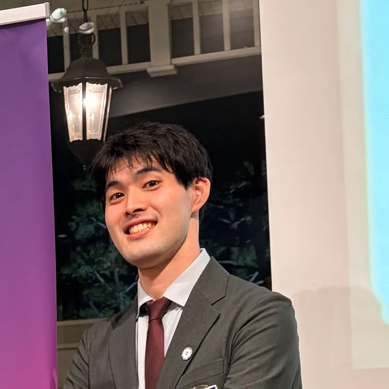
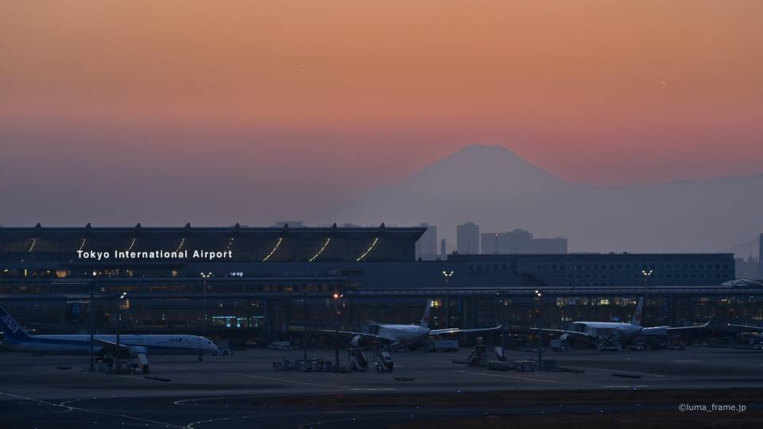
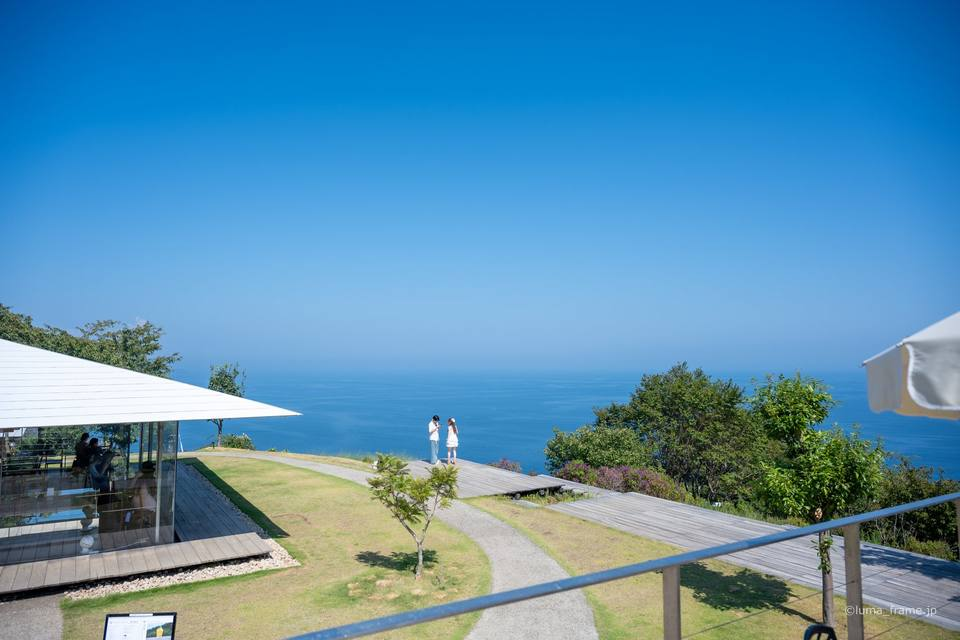
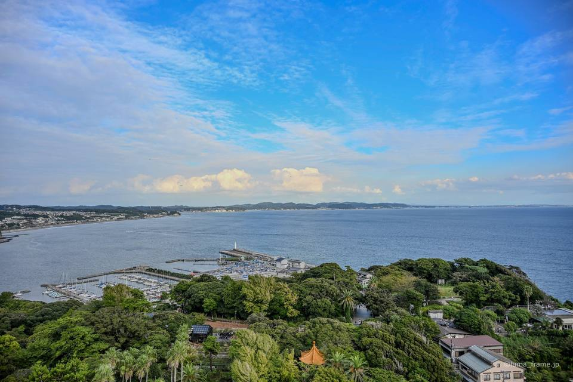

Half day (3 to 4 hours)
One town at an easy pace, or two places close together.
Private tours in English for your group of up to six, in 16 areas from Asakusa to Dazaifu and Sapporo. We travel by train, bus and on foot, at a pace that suits you.
These tours suit you if:

Your guide
I guide one group at a time, in English or Japanese. I've been to every area on this page. I have food allergies myself, so I check our food stops with the restaurants before the day.
In January 2011, in my last year of junior high, I left Japan for Brisbane. I stayed until I'd finished university in March 2020. That's nine years of Australian school, uni and part-time jobs.
I speak English and Japanese without any trouble, and I don't get shy around people from other cultures. What I care about most on the day is simple: that you're having a good time.
Since moving back to Japan in 2020, photography has taken me to airports and towns all over the country.
I have a serious kiwi fruit allergy (anaphylaxis) and react to some fruit in the rose family. If there's anything you can't eat, tell me when you first get in touch.
Each area has its own page with sample routes for every tour length.



Ask me about other areas.
Every tour is private, for one group of up to six people.
One town at an easy pace, or two places close together.
A day trip out of the city, to places like Kamakura or Hakone.
Somewhere worth staying over, like Kyoto, or a pair such as Atami and Hakone.
I look after the day itself. Train tickets, hotels and any entry tickets you want to book ahead are yours to arrange. I'll tell you exactly where and when to meet me.
We get around by train, bus and on foot, the same way people here do. I don't drive guests, and I'll show you how the ticket machines work as we go.
Quotes are provided in USD, CAD, AUD, NZD, GBP or EUR, so you can skip the hassle of currency conversion. Other currencies are quoted in USD. Each quote covers your whole group of up to six people. When you send an enquiry, please include your preferred dates and the kinds of experiences you'd like.
Tell me your dates, how many of you there are, where you'd like to go and anything you can't eat.
I'll send a route for the day and a quote for your group.
If it all looks right, we lock in the date.
I meet you at the station we agreed on, and off we go. English by default, Japanese if you prefer.
You don't need a fixed plan yet. Your dates and group size are enough for me to put together a route and a quote.
Ask for a free quote →